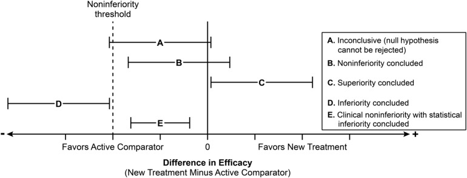
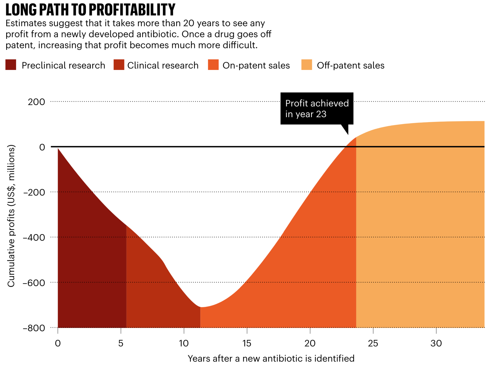
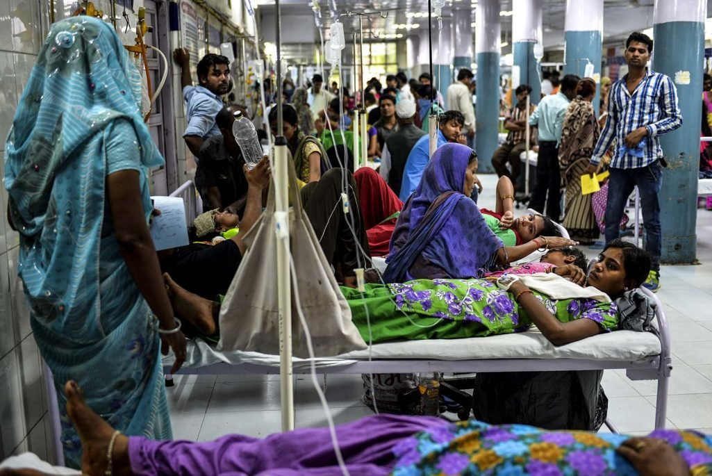

Module 2: Antibiotic development
Background
In module 1, we discussed the history of antibiotic discovery and the current challenges with antimicrobial resistance that has been amplified by the lack of development of new antibiotics. In this module, we will examine the scientific and economic challenges associated with antibiotic development, and compare and contrast strategies that have been proposed to stimulate development of new antibiotics. As discussed previously, antibiotic discovery began to slow in the 1980’s leading to a discovery void in new molecular entities (NMEs) since the 1990s. This lack of antibiotic innovation occurred at a critical period when antibiotic resistance, particularly to many front-line beta-lactam antibiotics, began to increase rapidly due to the emergence and worldwide diffusion of new forms of enzymatic (beta-lactamase) resistance to antibiotics. These bacterial enzymes can be broadly classified as:
- Narrow-spectrum beta-lactamases, which act on penicillins and first-generation cephalosporins (e.g., TEM-1 and 2, SHV-1, cephalosporinases, OXA-type enzymes
- Extended-spectrum beta-lactamases (ESBLs), which act on penicillins and all four generations of cephalosporins (SHV-2, SHV-5, SHV-7, SHV-12, TEM-10, TEM-12, TEM-26, CTX-M, OXA-type ESBLs)
- Carbapenemases, which act on penicillins, all four generations of cephalosporins, and carbapenems (KPC, NDM-1, VIM and IMP carbapenemases, OXA-type carbapenemases).
The emergence and rapid spread of these beta-lactamases was problematic because they have a low barrier for mutation and creating resistance to new beta-lactams that are used as first and second line therapies for common respiratory, abdominal, and genital-urinary tract infect infections. Additionally, many of these enzymes are encoded on spread on plasmids (mobile genetic elements that can be passed from one bacterial species to another) that harbour additional resistance mechanisms to other classes resulting in rapid dissemination of multidrug resistance.

Figure 1. Increase in numbers of group 1, 2, and 3 beta-lactamases from 1970 to 2009.1
As discussed previously, the WHO in 2017 convened a group of experts to prioritize the need for new drugs to treat antibiotic- resistant bacteria. The WHO assigned the highest priority to antibacterial drug research and development for the Gram- negative bacteria Acinetobacter, Pseudomonas and species of Enterobacterales that are resistant to carbapenems and are usually extensively drug resistant (XDR).
Table 1. WHO priority pathogens
| Priority | Pathogens included |
|---|---|
| Critical | Acinetobacter baumannii (Carbapenem-resistant) Pseudomonas aeruginosa (Carbapenem-resistant) Enterbacterales (3rd generation cephalosporin, carbapenem-resistant) |
| High | Enterococcus faecium, vancomycin-resistant Staphylococcus aureus, methicillin-resistant, vancomycin intermediate and resistant Helicobacter pylori, clarithromycin-resistant Campylobacter, fluoroquinolone-resistant Salmonella spp., fluoroquinolone-resistant Neisseria gonorrhoeae, 3rd generation cephalosporin-resistant, fluoroquinolone-resistant |
| Medium | Streptococcus pneumoniae, penicillin-non-susceptible Haemophilus influenzae, ampicillin-resistant Shigella spp., fluoroquinolone-resistant |
The same year, the WHO released a clinical pipeline report, which was updated in 2018 and 2019. The report analysed antibiotics and biologics in development according to their activity against the critical priority pathogens carbapenem resistant Acinetobacter baumannii (CRAB), carbapenem-resistant Pseudomonas aeruginosa (CRPA), extended spectrum beta-lactamase (ESBL) producing Enterobacterales and carbapenem resistant Enterobacterales (CRE). The level of innovation in the global clinical pipeline was assessed on the basis or the absence of pre-existing cross-resistance to currently used antibacterial drugs. The key findings from this report were:
The clinical pipeline remains insufficient to tackle the challenge of increasing emergence and spread of antimicrobial resistance.
It is primarily driven by small- or medium-sized enterprises (SMEs), with large pharmaceutical companies continuing to exit the field.
Eight new antibacterial agents have been approved since 1 July 2017, but overall, they have limited clinical benefits.
One new anti-tuberculosis (anti-TB) agent, pretomanid, developed by a not-for-profit organization, has been approved for use within a set drug-combination treatment for MDR TB.
The current clinical pipeline contains 50 antibiotics and combinations (with a new therapeutic entity) and 10 biologicals, of which 32 antibiotics are active against the WHO priority pathogens:
Six of these agents fulfil at least one of the innovation criteria; only two of these are active against the critical MDR Gram-negative bacteria.
More than 40% of the pipeline targeting WHO priority pathogens consists of additional beta-lactam and beta-lactamase inhibitor (BLI) combinations, with a major gap in activity against metallo-beta-lactamase (MBL) producers.
The anti-TB and Clostridium difficile antibacterial pipeline is more innovative than the WHO priority pathogens pipeline, with more than half of the antibiotics fulfilling all of the innovation criteria.
The report confirms previous reports and highlights the public health implications of a drying antibiotic pipeline. In the following sections we will explore the causes and potential solutions to this crises.
Why has antibiotic discovery faltered in recent years?
Scientific challenges
Discovering new antibiotics is inherently challenging. Antibiotics must attack multiple target bacterial species that change over time by developing resistance, and must reach effective concentrations in multiple body compartments.2 The discoverer of a new antibiotic must guess what resistance problems will be a problem in 10 years, and bring drugs to market to overcome these challenges. This flexibility and risk is not encountered in other therapeutic areas such as hypertension, diabetes, hyperglycemia, or Alzheimer’s disease where the drugs bind to one specific target. Even for cancer chemotherapy, which develops resistance to therapy, the mechanisms leading to resistance are not transmissible to other cancers or patients. Antibiotics must also be remarkably non-toxic, as their daily dosages often measured in grams are often higher that for other pharmaceutics measured in milligrams.
Nearly all of the antibiotics used today belong to classes of drugs discovered before 1970. They are products of a “golden age” of antibiotic discovery from 1945-1965, which screened natural products from soil streptomyces and fungi. This discovery approach hit the law of diminishing returns by the 1960’s with the same classes being constantly rediscovered.2 Put simply, the low-hanging fruit for new antibiotic discovery has already been picked. Since 1970, the only new antibiotic classes to reach the marked are the oxazolidinediones (i.e. linezolid discovered in 1978 launched in 2000) and lipopeptides (discovered in 1986 launched in 2003).
Most advances in antibiotics since the 1970s have come through improvements of existing antibiotic classes yielding analogues with increased potency and greater ability to evade existing resistance. However, over time this approach has become more difficult with the emergence of more potent resistance mechanisms that affect multiple antibiotic classes.
Given the the limits of existing strategies of screening soil organisms, the pharmaceutical industry turned to genomics-based high-throughput antibiotic discovery strategies with considerable enthusiasm in the 1990s.2 This discovery strategy used genomic sequence data from several target bacterial pathogens to identify conserved genes encoding targets not found in mammalian cells, and then ran high-throughput inhibition screens of existing chemical compound libraries to identify “druggable” molecules for these identified targets.
Despite early enthusiasm and huge financial investments by many pharmaceutical companies, very few potential new antibiotic targets were identified and even fewer drugs entered into clinical development. An example of the scientific challenge is illustrated by experience of SmithKline Beecham (later purchased by Glaxo Smith Kline-one of the few large pharmaceutical companies still involved in antibiotic discovery (inset box). Indeed, only four major pharmaceutical companies still have active antibiotic research programmes.
The disappointment of genomics: From 1995 to 2002, SmithKline Beecham (now part of GlaxoSmithKline (GSK) identified 300 potential targets and ran 67 high-throughput screens, each of 260000 –530000 compounds. Sixteen screens led to ‘hits’—meaning compounds that bound selectively to a target giving a reproducible positive signal in the assays—and five of these translated into ‘lead’ compounds. Of the five corresponding targets, two (FabI9 and Mrs) were not universally essential or conserved, meaning that they could not form the targets of broad-spectrum antibiotics, and it proved impossible to incorporate ‘drug-like properties’ into molecules that bound two others. The final target identified was peptide deformylase, for which GSK now has a molecule (GSK 1322322) in Phase II trials, although this did not come from high-throughput screening. This performance appears typical of other companies that followed the genomics strategy. Thus, 20 years after its advent, no antibiotic developed by this approach has reached the market.3
Antibiotic regulatory hurdles
The goal of regulatory bodies such as the U.S. Food and Drug Administration (FDA), the European Medicines Agency (EMA), and the African Medicines Agency (AMA) is to review the potential benefits and risks to ensure that new drugs that make it to market are both safe and effective for patients in need. Still, a drug that gains FDA approval may give pause to European reviewers, despite having reviewed the same evidence as their American counterparts, and vice versa. Both the FDA and the EMA and AMA have distinct processes with different methods of endpoint evaluation, and individual comfort levels with risk. Other countries, such as India and China and many LMICs have their own processes for drug registration and approval and may require additional studies in populations of patients from their countries prior to approval. Therefore, if a new antibiotic that is effective for treating MDR pathogens is approved in one country, there is no guarantee that the drug will be favourable reviewed or available in other countries.
Less than 10% of LMICs have access to “newly- approved” antibiotics within 10 years of availability, due to low probability expectation4. Indeed, The majority of the world’s annual 5.7 million antibiotic-treatable deaths occur in LMICs where the mortality burden from treatable bacterial infections far exceeds the estimated annual 700,000 deaths from antibiotic-resistant infections.5However, even among HIC, patient access to new antibacterials is limited in countries such as Canada, Japan, and many European countries.6. Companies appear to eschew antibacterial markets not offering attractive commercial prospects, which are almost all markets currently. If truly innovative antibacterials, like those identified by WHO, cannot find profitable markets.
LMICs with limited drug regulatory capacity may loose control of antibiotic distribution. As a result, some antibiotics that should be reserved as last-line treatment options are sold without a prescription. Limited regulatory capacity may also lead to rampant availability of sub-standard and falsified antibiotic products, which further promote the emergence of antibiotic-resistant pathogens.

Figure 2. Pathway from drug discovery to regulatory approval and estimated costs. ADMET- studies to document drug absorption, distribution, metabolism and elimination, and toxicity in animals. PK/PD pharmacokinetic/ pharmacodynamic relationships- i.e. dose response and toxicity relationships from animals.
A company seeking regulatory approval to sell a new prescription antibiotic must complete a five-step process: discovery/concept, preclinical research (animal testing), clinical research, regulatory review, and post-market safety monitoring. The cost to achieve this regulatory approval for antibiotics has been estimated between 1-1-5 billion dollars.7 The two most expensive components for antibiotics are the drug discovery (due to the higher failure rate) and clinical trials. Current guidance published by the US Food and Drug Administration (FDA) and the European Medicines Agency (EMA) requires randomized controlled clinical trials to demonstrate the non-inferiority of the new antibiotic to established therapies. This has to be complemented by the enrolment of a large number of patients to support the marketing application (New Drug Application NDA or Marketing Authorization Application MAA, respectively) for 1 or more infection site–specific indication (e.g., complicated urinary tract infection or complicated intra-abdominal infection), based on the drug’s clinical efficacy and safety. The bacterial pathogens relevant to the indication listed in the prescribing information are a secondary consideration based on the spectrum of activity of the investigational antibiotic and the microbiological efficacy data extracted from the clinical trials.8 As a result, even if a new antibiotic is developed for a MDR pathogen, it is difficult to perform clinical studies and receive approval from the FDA or EMA for the treatment of a resistant infection.
Non-inferiority trial designs
There are two kinds of clinical trials in which all pharmaceutical products must show which individuals can benefit from the product. They should also demonstrate a way to identify those individuals and document the benefit received from the product. Clear answers to these questions are required for product approval and acceptance. To achieve this, one of two types of trial designs can be used:
A superiority trial – the goal of this is to show that the new agent is measurably superior to existing treatments or to a placebo.
A non-inferiority (NI) trial – Sometimes formerly referred to as an “equivalence trial”, the goal of this is to show that the agent has efficacy similar (within the bounds of a pre-specified non-inferiority margin) to that of existing treatments.The concept of a non-inferiority trial is somewhat challenging to understand9.
A unique aspect of registration trials for antibiotics are that they are typically a non-inferiority design for a specific indication: e.g., complicated urinary tract infection (cUTI), complicated intraabdominal infection (cIAI), hospital-acquired bacterial pneumonia/ventilator-associated pneumonia (HABP/VAP). “Complicated” has different meaning depending on the disease state but essentially implies higher risk of treatment failure or relapse. Antibiotics cannot be typically approved or registered for a specific pathogen or resistance pattern, therefore any data on the efficacy of a novel antibiotic for resistant pathogens is typically inferred from preclinical laboratory and animal studies.
From a public health perspective, new antimicrobial agents with an improved microbiologic spectrum of activity should be developed before widespread bacterial resistance emerges. This desire leads to a paradox: although it is easy to demonstrate that a novel test agent has an improved spectrum both in vitro and in preclinical animal infection models, rigorous demonstrations of the new agent’s superior clinical efficacy over existing drugs is difficult to implement on a routine basis in trials of human infections:
There are two main aspects that influence the choice of non-inferiority design when planning clinical trials:
The first is related to ethical considerations. If there is an existing treatment which is life-saving or prevents serious harm to the patient for a given disease, it is not ethical to use placebo treatment in a comparative trial; consequently the comparison has to be done to an active control.
The second aspect is that in many therapeutic areas the increase in efficacy of new drugs is minor but very often these drugs have improved safety profiles and cost-benefit ratios.
These situations lead to trials where the primary objective is not to show superiority of a new drug compared to existing therapies, but to show that the new drug is not “worse” than the existing therapy.
If we define “not worse” as “better than control minus a specific margin”, then we end up in a non-inferiority trial.
The effect of the treatment can be established by showing that the lower bound of the 1-sided 97.5% confidence interval (equivalent to a 2-sided 95% confidence interval) of C-T is either above zero or above M. Establishing non-inferiority margin M is one of the challenges of non-inferiority trials, the other is to establish Assay Sensitivity (AS). The margin M should be chosen as the largest clinically acceptable loss in efficacy and may depend on the medical indication of the drug. In most trials this margin is chosen to be of fixed size and is determined in advance. Antibiotic treatment success rates of 80% or more are common and thus acceptable loss in efficacy is usually 10-15%. Non-inferiority trials primarily aim to establish that at worst a clinically acceptable decrement in efficacy between a standard and experimental therapy could exist, expressed as a non-inferiority margin of Δ. Any trade-off in efficacy might potentially be compensated by decreased toxicity, more convenience, lower cost, and/or a broader (or narrower) spectrum of activity.
What constitutes a fair non-inferiority margin (Δ) is often a matter of debate and typically established with the regulatory agency (e.g., US FDA, EMA) before the trial is started. For life-threatening illness, caregivers may find the prospect of any decrement in efficacy unconscionable unless clearly outweighed (or at minimum counterbalanced) by improved safety and tolerability. Serial application of non.inferiority margins could theoretically lead to creeping erosion of the control referent if each standard bearer is progressively (albeit slightly) less active than its predecessor- a phenomena known as “biocreep.” Establishing non-inferiority in serious but treatable infections should only be considered a prelude to finding effective treatments for similar populations suffering from refractory pathogens. Non-inferiority trials serve as an initial strategic bridge to more antibiotic choices when acceptably safe and reliably efficacious therapy is lacking

Figure 3. Possible results of non-inferiority trials demonstrated by 2-sided 95% confidence intervals. Five distinct outcomes of non-inferiority studies are diagrammed using 2-sided 95% confidence intervals. The null hypothesis for the study is that the experimental treatment is inferior to the standard comparator, leaving non-inferiority of the new treatment as the alternate hypothesis if the null hypothesis is rejected. Failure to reject the null hypothesis does not necessarily imply that the alternate hypothesis has been excluded. The specific point estimate within limits does not alter the qualitative conclusion. On the other hand, both the upper and lower bounds of the confidence interval can provide critical information depending on the circumstances. Each panel indicates the appropriate interpretation (A–E). Figure is from DiNubile et al.10
Despite the high risk and high cost for development of a new antibiotic, the returns are relatively poor. Meanwhile, industry analysts estimate that the average revenue generated from an antibiotic’s sale is roughly $46 million per year.7. Therefore a key problem for antibiotics is that their development is not profitable. Companies are making more money from the sales of other drug classes, including immuno-oncology therapeutics, that antibiotic development projects compare poorly when management allocates capital.

Figure 4. Profitability of the antibiotic sector vs. other drug types. Source McKenna et al.11
Moreover, it is difficult for an antibiotic manufacturer to be able to precisely identify the small proportion of patients who both really need the antibiotic for a MDR pathogen and are willing to pay a high price for the drug. As noted by Ardal and colleges:12
The major challenge with antibiotics is profitability. As older antibiotics are still effective for treating most infections, the primary value of new antibiotics is to treat multidrug-resistant infections and provide a protective benefit against emerging pathogens. The duration of antibiotic treatment for individual patients is relatively short (for example, 1–2 weeks or up to 1 month), whereas the treatment for chronic conditions can be continuous over many years. Resistance is hastened by use, new antibiotics are stewarded as a last resort, which results in low unit sales. Whereas medicines for rare diseases have used high unit-pricing strategies to achieve profitability, these are often unavailable to antibiotic developers due to clinical trial design (it is difficult to demonstrate the superiority of new antibiotics as resistance is still relatively uncommon) and bundled hospital reimbursement structures (whereby hospitals are incentivized to prescribe lower-cost antibiotics). Large pharmaceutical companies have largely abandoned the market, accounting for only 4 of the 42 antibiotics currently under development.13Any investment in a new antibiotic is seen as a high-risk proposition, and consequently the returns expected by prospective investors are high to account for this risk premium. This in turn puts pressure on small and medium-sized enterprises (SMEs), as there is little chance that their candidate -antibiotics will be purchased by larger companies.
Enormous costs are incurred once an antibiotic is approved. Approval by regulatory agencies is usually contingent on performing many studies post approval (phase IV): pediatric dosing and safety studies, pharmacokinetic studies in special populations (i.e. elderly, obese, dialysis), pharmacovigelance (safety), development and validation of susceptibility testing technology, manufacturing and supply chain investments, anda 5-10 years commitment to monitor resistance through antimicrobial surveillance studies. Recouping these costs may be impossible for drugs with activity against MDR pathogens as many many countries and health systems will negotiate the lowest possible price for purchase and then (appropriately) restrict the use of the antibiotic to preserve its effectiveness- resulting in low sales. This is completely different from a scenario of a new “breakthrough” cancer therapy, where the drug will be immediately incorporated in treatment
Thus while the hight post-approval costs may be absorbable by large pharmaceutical companies with other profitable drug products in other therapeutic areas, they can put smaller companies out of business. As novel antibiotics are held in reserve for years, sales revenues are very low in the first 5–7 years. During this period, the company must pay for the high post-approval costs described above that for antibiotics cannot be covered through aggressive sales. For antibiotics, companies have no way to pay for them without positive net revenues in an environment that hinders their ability to raise additional funds. especially if the approved drug was developed for MDR pathogens as illustrated by the Archeogen company:
For further study: Achaogen first advanced plazomicin (Zemdri), a broad-spectrum aminoglycoside antibacterial, into the clinic in 2009. Despite initial plans to develop the drug as a much-needed new treatment for carbapenem-resistant Enterobacteriaceae (CRE) — which included drug-resistant Klebsiella species and Escherichia coli — a phase III trial that started in 2014 in this setting struggled to recruit patients. The company pivoted to initiate a phase III trial in complicated urinary tract infections (cUTIs) in 2016, and submitted the drug for FDA approval in this indication and in bloodstream infections in 2017. Although plazomicin was approved for cUTIs in 2018, the FDA rejected its use in the potentially more lucrative and important bloodstream infections despite evidence of improved outcomes in patients with carbapenem-resistant infections. An independent advisory committee also voted against approval in the bloodstream, noting that the efficacy signal came from a small study of just 28 patients. In the end, It spent 15 years and a billion dollars to win FDA approval for Zemdri, a drug for hard-to-treat UTIs. In July, the World Health Organization added plazomicin to its list of essential new medicines. Achaogen later filed for bankruptcy, less than a year after the FDA approved its lead product. See: Crises Looms in Antibiotics as Drug Makers Go Bankrupt, NY Times, December 25, 2019.
What are the current strategies to incentive antibiotic development?
Incentives for antibiotics are categorized as either ‘push’ or ‘pull’. Push incentives occur before regulatory approval by the FDA or EMA, and the funding supports many projects, including the many that fail before approval. Pull incentives are paid only after regulatory approval and hence only successful products are supported. Both push and pull incentives are required to address the lack of antibiotic development.
Many successful initiatives to establish push funding for antibiotics have been developed over the last decade. At present, major AMR development initiatives include:
US Biomedical Advanced Research and Development Authority, BARDA (1.2 billion dollars to support Phase 2/3 antibiotic development against 21st century threats including drug-resistant bacteria, supports CARB-X)
CARB-X (550 million, Hits to lead Phase 1 product development of therapeutics, diagnostics and preventatives against WHO and CDC priority drug-resistant bacteria)
The Global Antibiotic Research and Development Partnership, GARDP (Produce discovery from discovery to delivery including novel therapeutics, optimizing antibiotics, developing combinations. Focused on WHO priority list).
Novo HoldingsREPAIR Impact Fund (165 million investment in lead optimization to Phase I development of therapeutics and diagnostics against WHO priority drug-resistant bacteria.)
Joint Programming Initiative on Antimicrobial Resistance, JPIAMR> (novel therapeutics, diagnostics, surveillance, prevention, stewardship, WHO priority pathogens
Wellcome Trust (175 million drug-resistant infections focused on policy, strengthening evidence for action, clinical trial capabilities and innovative product development including CARB-X
AMR Action Fund. WHO, European Investment Bank, and Wellcome Trust
UK AID (315 million pounds funded through the Global AMR innovation fund and the Fleming Fund to help LMICs tackle AMR).
The German Federal Ministry of Education and Research support of national research programs as well as contributions to international initiatives like CARB-X, GARDP, and JPIAMR.
Bill & Melinda Gates Foundation (124 million targeting drug-resistant infections in low-middle income countries (LMICs), disease surveillance, vaccine development, economic modeling, and CARB-X
U.S. National Institutes of Health (1.4 billion dollars funding basic research, academic industry startup partnerships, and other research and development against bacterial threats, for vaccines, therapeutics and diagnostics
These push efforts are creating hope. The preclinical pipeline is shifting to higher quality products targeting the most urgent clinical needs, de-risking projects for private development. Without these programmes, the fragile pipeline would become entirely moribund. However, the bankruptcy of Achaogen in April 2019 provided a wake-up clarity for the antibiotics industry: the finish line is not FDA or EMA approval, but break-even profitability. For Achaogen, scientific and regulatory achievement ended in economic disaster. A similar fate awaits other antibiotic companies unless governments enact meaningful pull incentives in the next year.

Figure 5. Push versus pull incentives for antibiotic development.
Pull incentives are increasing the focus of of new initiatives to develop antibiotics in the United States and Europe, building on the release of the DRIVE-AB final report in 2018. Clearly, effective pull funding will require substantial public investment that may not be politically popular if viewed as a large cash “handout” to pharmaceutical companies. Yet, some novel reimbursement schemes with pull incentives for antibiotic development are starting in the US, UK and Europe (recently reviewed by Gotham et al[14). One of the most frequently discussed pull incentives is the “Netflix reimbursement model” that is currently being implemented as a pilot project in the UK and Sweden. This payment mechanism is called ‘de-linkage’ model because it delinks the payments to manufacturers from the number of units sold..
Figure 5. Financial Times Video Examining the “Netflix Model” of Pull Incentives for Antibiotic Reimbursement.
How can the true value of antibiotics be better communicated to the public? Two leading experts in antimicrobial resistance (Drs. John Rex and Ken Outterson) have suggested that antibiotics should be thought of more like the “fire-extinguishers” of medicine.
“No one wakes up hoping they get to use a fire extinguisher that day. Not even the fire department. Fire fighters go to work every day and hope they don’t get any calls. They perform regular maintenance on all their gear and stay at the station 24/7 just as a precaution. We pay them to be available and prepared so they can come to our rescue when we need them. If we didn’t pay for the fire department for years and then a fire broke out in the middle of your town, can you imagine the damage? People would die unnecessarily, the medical system would be overwhelmed, and the fire could spread beyond the borders of the town. The fire might rage through the whole county, then the region, and then your entire country. It might even spread through the entire world, just like COVID-19.
A fire fighter uses a hose to subdue flames engulfing a home while a physician uses antibiotics to stop an infection in your body. We need to be prepared for fires – the flame kind and the medical kind. As a society, we are prepared for the flame kind. But the medical? We aren’t even close.
Without antibiotics, all of modern medicine will change worldwide. Diseases we think of only being in the history books could become a part of every day life again. Minor surgery could become life threatening. An infected cut on your hand could be the end. Childbirth will easily endanger the lives of mothers and newborns. Cancer treatments will be nearly impossible. Antibiotics are vitally important to all of humanity”.
-John Rex, M.D., AMR Solutions

For more information on how AMR risks can be responsibly and effectively communicated to the public, see this excellent video prepared by the Wellcome Trust: [Drug-resistant infections: the power of language (https://www.youtube.com/watch?v=wTgRpOIxNG0&t=6s)ùù){.uri}
For further study: Tetraphase pharmaceuticals is a small company with a innovative and unique chemistry platform for developing novel tetracycline analogues that have activity against many MDR organisms on the WHO Priority Pathogens List. Their lead compound, eravacycline, was appoved by the FDA for the treatment of complicated intraabdominal infections in 2018. Like many of its peers, merely securing approval was only the first hurdle. What has happened since to everacycline and Tetraphase pharmaceuticals? How could a different reimbursement scheme changed outcomes?
Antibiotic supply chain problems
Although much of the focus on antibiotic availability is focused on new drugs for AMR, another worrying phenomenon is the increasing frequency of shortages of older generics, mostly injectable antibacterials, such as piperacillin-tazobactam or benzylpenicillin. Drug shortages are another factor that can contribute to AMR.15 The fierce price competition combined with stringent production requirements for parenteral antibacterials has led to a significant reduction of suppliers, in particular of active pharmaceutical ingredients, and to highly optimized and thus more vulnerable supply chains. Increasingly prevalent shortages of even older antibiotics is now recognized as a major public health threat and requires additional specific action.

Figure 6. The reasons for antimicrobial shortages across the development, distribution and use pathway.
What can be done to ensure antibiotic access in LMICs?

Individuals living in poverty are susceptible to infections and under poor living conditions (no access to basic sanitation facilities or health care) infections spread faster. Antibiotics, which may be available without prescription, are often used as substitutes for clean food, clean water, vaccines and diagnostics. Therefore, it will be impossible to address the challenges of antimicrobial resistance and lack of access to antibiotic therapy if other contributing factors are not addressed.
For countries where antibiotics can be accessed without a prescription, controlling antibiotic distribution should be highly prioritized. However, introduction of a new prescription system when antibiotic demand is still high can lead to unintentional consequences (such as the distribution of antibiotics on the black market) that are even harder to control. It is important to note that the overuse of antibiotics has become a social norm in many countries as it is influenced by the beliefs and attitudes of the individuals towards antibiotics as well as sociocultural factors, regardless of medical justifications.16
Antibiotic use is generally higher in the developed world, but LMICs are rapidly catching up as access to healthcare improves and the burden of antibiotic-treatable infections remains high. Between 2000 and 2015,the global rate of antibiotic consumption increased by 39%, from 11.3 to 15.7 defined daily doses (DDDs) per 1,000 inhabitants per day. In LMICs, the consumption rate for cephalosporins,quinolones, and macrolides has increased by 399%, 125%, and 119%, respectively, while in high-income countries (HICs), consumption has decreased by 18%, 1%, and 25%, respectively.
DDD is a statistical measure of drug consumption, defined by the World Health Organization, and is used to standardize the comparison of drug usage between different drugs or between different health care environments
In an analysis by the Center for Disease Dynamics, Economics & Policy (CDDEP),17 three key barriers in LMICs were identified that affect access to newer antibiotics for resistant pathogens:
Barrier 1: Weak drug discovery, difficulties in market entry, and poor stewardship lead to irrational selection and use of antibiotics
Incentives for the sale of antibiotics promote inappropriate use, and conflicts of interest arise when the sale of medicines is not separated from the remuneration of hospitals and prescribers. For example, in China, hospitals derive significant revenues from the sale of antibiotics, and consequently, antibiotics are prescribed widely and inappropriately. Marketers with unrestricted access to healthcare providers in LMICs can influence prescribing. In Uganda, for example, doctors can receive financial incentives for prescribing specific brands or using a specific pharmacy. Many doctors have a financial interest in private pharmacies and prescribe more expensive antibiotics even when unnecessary. Promoters from pharmaceutical companies encourage doctors to prescribe multiple medications simultaneously and have unregulated access to doctors and pharmacists. In India, direct and indirect gifts from medical representatives and commissions influence prescribing practices, and hospitals profit from sales. Doctors feel perceived or real pressure from patients, who, if unsatisfied, may change doctors. Doctors may prescribe for shorter durations than the recommended course of treatment to ensure that the patient returns. Prescribers may prefer to prescribe injectable formulations to maximize their profits
Self-prescribing is common across LMICs. In Uganda, 41% of antibiotic sales are over-the-counter. Antibiotics are easily obtained without prescription, and patients may reuse old prescriptions to treat recurrent infections or avoid going to a doctor for infections they consider embarrassing. Moreover, non-professionals often prescribe or dispense antibiotics. Healthcare providers without formal training provide more than 70% of primary care in India. Only 58% of those referring to themselves as doctors in India’s cities have a medical degree; in rural areas the proportion is just 19%, and a third of ‘doctors’ have only a secondary school education.
CDDEP Recommendations
| Number | Recommendation | Stakeholders | Rationale |
|---|---|---|---|
| 1 | Encourage R&D of new or improved antibiotics, diagnostic tests, vaccines, and alternatives to antibiotics for bacterial infections. | Countries, regional collaborations, WHO and other international bodies, pharmaceutical industry, academia | At a global scale, higher investment in novel antibiotics, temperature-stable formulations, and rapid diagnostic tests is needed. |
| 2 | Support the registration of antibiotics in more countries according to clinical need. | WHO and other international bodies, national governments, policymakers, regulators, pharmaceutical industry | Efforts at the national, regional, and global levels to support drug registration could reduce the upfront cost of accessing less attractive markets and benefit patients by making life-saving drugs available. Newer drugs coming to market are likely to be introduced by small and medium-size enterprises that may not have the expertise or resources to register in multiple countries. However, this cost should not be a barrier. |
| Regulators and policymakers | In many instances, regulations and requirements could be aligned across countries and simplified to reduce costs | ||
| Pharmaceutical companies | Plans for registration should be part of the development process. | ||
| 3 | Establish standards of practice and national treatment guidelines. | WHO, countries, experts and their professional associations, hospitals and community care facilities | The WHO should issue a call to action for all professional associations and councils involved in prescribing practices to develop clinical guidelines for treating infectious diseases at all levels of healthcare. |
| 4 | Generate awareness and educate patients and prescribers. | NGOs, advocacy groups, professional bodies,WHO offices at all levels, health ministries, and local institutions (hospitals, clinics, schools, churches, etc.) | Information about the price and quality of antibiotics approved for use in a country will support rational prescribing and use, as will surveillance data on local antibiotic resistance profiles. NGOs, professional bodies, and price competition among suppliers and removing poor-quality suppliers from the market. |
| 5 | Reduce conflict of interest and incentives that lead to inappropriate antibiotic use. | Regulators, NGOs, doctors, and patients | Conflicts of interest between prescribers and the vendors of pharmaceuticals can be addressed by regulating gifts from drug companies and promoting the enforced or voluntary declaration of such gifts |
Barrier 2: Antibiotics are not affordable for many in LMICs and government funding for health is low
LMICs face constraints on public spending and have insufficient budgets for healthcare. In Uganda, interviewees indicated that just 8.9% of the national budget goes to health services and only 47% of essential medicine list drugs, including antibiotics, are purchased. Government spending on healthcare in India is 1.4% of gross domestic product and insurance coverage is poor. Public health facilities lack adequate medicine stocks, and antibiotic availability is 50% to 60% in some states
Although global supply shortages have affected even HICs , the immediate challenges in LMICs are often associated with supply chain management and budgets for medicines. When stockouts are used as an adverse performance metric, countries may have incentives to keep drugs in stock but not distribute them.
CDDEP Recommendations
| Number | Recommendation | Stakeholders | Rationale |
|---|---|---|---|
| 6 | Explore innovative funding of essential antibiotics. | UNICEF, WHO, national governments, pharmaceutical manufacturers | Countries with less purchasing power could pool their resources for procurement under arrangements similar to Gavi (the vaccine alliance) or the Global Fund. UNICEF/WHO might coordinate procurement and distribution. Besides helping LMICs increase their purchasing power, such an arrangement would support quality manufacturers while driving out substandard suppliers. |
Barrier 3: Weak health systems, unreliable supply chains and poor quality control fail to deliver antibiotics to patients in need
For many patients in LMICs, out-of-pocket payments for antibiotics either limit access or push people into poverty. In remote areas, transportation costs for patients and accompanying relatives can be substantial, in some cases exceeding 20% of medical costs. In rural Kenya, the main reason for not seeking treatment was “lack of cash.” “No drugs available” and “drugs are ineffective” were also stated as reasons.
CDDEP Recommendations
| Number | Recommendation | Stakeholders | Rationale |
|---|---|---|---|
| 7 | Ensure the quality of antibiotics, and strengthen pharmaceutical regulatory capacity | WHO, national and regional regulators, countries, pharmaceutical suppliers and manufacturers | WHO support and coordination, national and regional regulators could collaborate to support quality assurance and avoid duplication of effort across countries. Rapid information exchange for pharmacovigilance, information on poor- quality suppliers, and sharing of best practices and innovation will help drive substandard and falsified antibiotics from the market. An international entity, such as the WHO, could provide surveillance, monitoring, and compliance testing for antibiotic quality. Such work |
| 8 | Encourage local manufacturing for cost-effective antibiotics. | Countries, regional collaborations, pharmaceutical industry, including drug R&D and manufacturers | Development and diversification of local manufacturers can help ensure the steady supply of essential, quality-assured antibiotics so that countries can meet their own needs. This should be supported through regional collaborations of countries such as the African Union. |
Summary
Ultimately, there are many interrelated scientific and economic challenges contributing to lack of development of new antimicrobials. Although AMR cannot be eliminated, many factors can be addressed to improve the scientific and economic environment for restoring health to the antibiotic pipeline. Antibiotic stewardship and infection prevention must therefore be pursued alongside improvements in access to antibiotics in LMICs. All stakeholders—international bodies, government leaders, health and agriculture ministries, patients and medical practitioners, farmers and veterinarians, academia, and the pharmaceutical industry— must slow the emergence of resistance to existing antibiotics to ensure affordability and access everywhere.